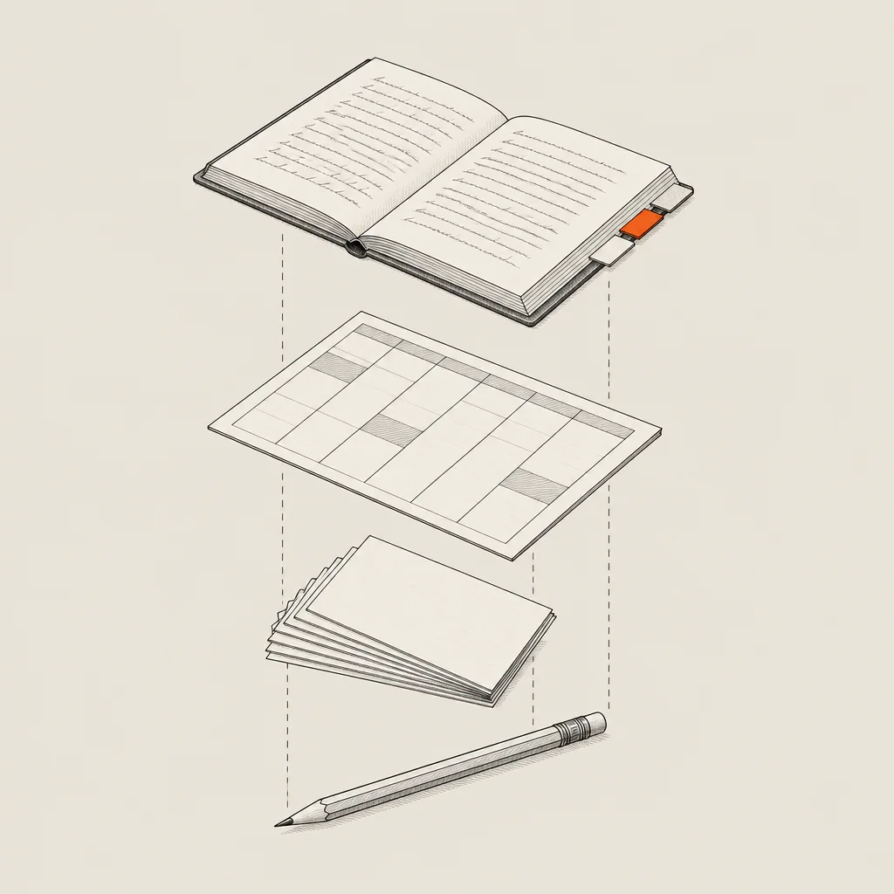

Public, private or homeschooled · free beta
Your notes, deadlines and revision — all in one calm place.
notivlo gives every subject its own notebook, puts everything that's due on one week, and quizzes you on what you wrote — built around the exam you're actually sitting.
Built for
A levels · IGCSE · the bac & brevet · GCSE · US diploma, AP & SAT · IB · Abitur · CBSE · WASSCE · HKDSE · and more
Free · no card · takes about a minute

Most study apps give you more to manage. notivlo gives you less — one notebook for each subject, one week with everything that's due, and a home page that tells you what to do next.
How it works
Three things, in the order you need them.
Write.
One notebook per subject, split into the same units and chapters as your syllabus. Formatting, images and equations are all there.


Plan.
Classes, deadlines and study time on one week. Your free time is worked out for you, and ticking something off crosses it out right where it sits.


Practise.
Recall cards made from your own notes bring back what you keep forgetting. Short practice papers come with a mark scheme, one line per mark.

Try it right here
This is the real app.
Look around — open a notebook, flip through the week. To write and plan, make a free account.
What's inside
Everything you need, nothing you don't.
Recall
Cards made from your own chapters. What you keep missing comes back sooner than what you know.
Practice papers for your exam
Tell it your school system and the exam you're aiming at, and papers follow its format and its marks: the bac out of 20, GCSE 9–1, A level A*–U. Short ones whenever you like, a full mock on a schedule.
Written lessons
Seven lessons on the topics that trip people up, from the discriminant to two's complement.
Mark schemes
One line per mark, so you can see exactly where marks were won or lost.
Sync
Sign in on another device and everything is there. Or skip the account and keep it on one device.
Light, dark and bigger text
Four text sizes that scale the whole app, not just the words.
Build your shelf
Pick your subjects. Open your notebooks.
Every notebook starts with notes written to its syllabus, at your level. Build your shelf here and it will be waiting for you when you sign up.
01 Where you are at school
02 Your subjects
REAL QUOTE HERE— NAME, YEAR
Get it
Start in your browser. Keep it on your Mac.
Mac says the app can't be verified or installed? Here's why, and what to do.
notivlo isn't signed with a paid Apple Developer certificate yet, so macOS shows a warning the first time. The app is sandboxed and can only reach its own sync server — but you shouldn't take that on faith from the person asking you to install it, so here's exactly what to click.
- Open the
.dmg. If macOS offers to Install this app?, click Cancel: that installer only accepts notarized apps and will say it could not install. Instead, drag notivlo onto the Applications folder in the window that opened. - Open it. macOS will refuse the first time — that's expected.
- Go to System Settings → Privacy & Security, scroll down, and click Open Anyway next to the notivlo message.
- Open it once more and confirm. That's the last time you'll see it.
If you'd rather do it in one line instead:
xattr -dr com.apple.quarantine /Applications/notivlo.app
Feedback
Tell me what's broken.
This is an early beta, built by one person. A bug, something confusing, a missing subject — all of it helps.
What gets sent: your message, your email if you typed one, which version you were on and your browser's user-agent string. Nothing from your notebooks, and nothing else.
Ready when you are.
Make an account in a minute, or just look around first.